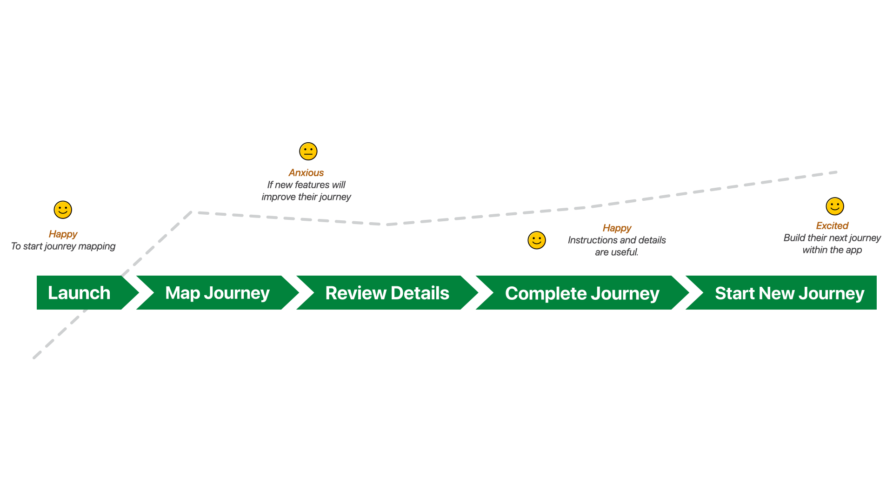

The Objective
TFL is responsible for overseeing London's transportation network, including the Underground, buses, and trams. The redesign aimed to enhance the experience for both regular commuters and first-time tourists, ensuring seamless navigation through an extensive and often confusing system.
The project focused on improving real-time updates, simplifying fare zone information, and enhancing wayfinding — addressing the two biggest pain points identified in research: fare zone confusion and inaccurate travel updates.
How I got here
The Process
Understand
Empathise & Define
Research, interviews, and framing the real problem.
Explore
Ideate & Prototype
Turning insight into concrete design directions.
Materialise
Test & Implement
Refining the design against real user feedback.



Outcomes
The Results
56%
Rise in app-based travel info usage
Clearer navigation and design encouraged more users to rely on the app for real-time updates, reducing dependency on station announcements.
38%
Higher user retention
A smoother, more personalised experience kept users returning for regular updates, particularly for commuting to work or school.
47%
Decrease in fare zone confusion
Improved visual design and clearer explanations helped the 47% of users who previously struggled with fare zones.
Balancing simplicity and guidance — making the app intuitive for first-time tourists and regular commuters alike, without overwhelming or under-informing either.
Efficent journey details

"The redesign makes travelling around London easier with clearer fares and real-time updates."
Sara

Interactive Prototype
Deep Dive
The Brief
Business & User Goals
The business goal was to enhance the experience for passengers navigating London's extensive transport system — making the app more intuitive and accessible for both regular commuters and tourists, and addressing pain points like fare zone confusion and real-time updates.
The user goal was to simplify the complex transportation network: understanding pricing, navigating large stations, and getting accurate travel information in real time — making the app more trustworthy for daily commuters and unfamiliar tourists alike.
The Process
Research began with a survey capturing users' experiences with the TFL system and app — usage frequency, fare zone confusion, and frustrations with real-time updates. The results showed that 68% of users struggled with fare zones, and 68% encountered delays that weren't accurately reflected.
Interviews with both commuters and tourists followed, to better understand journey-planning behaviour and tailor solutions to each persona.
Who Did You Speak To?
Regular commuters, who wanted better real-time updates and fare zone clarity. Tourists and first-time users, who needed clear step-by-step guidance. And TFL staff, who provided insight into what was feasible within the existing infrastructure.
Big Revelations
The lack of clarity around fare zones and pricing was a major barrier for 68% of users. Real-time updates were also often inaccurate — which pushed the design toward a clear, simple explanation of fare zones and improved update accuracy.
How Research Steered the Project
The findings focused the project on improving navigation and real-time updates directly — addressing the pain points identified, while keeping the app simple for first-time users and efficient for regular commuters.
Time, Struggles & Lessons
With more time, I'd have tested further with first-time users and tourists specifically. The biggest struggle was designing for two very different user needs — commuters wanting quick information, tourists needing more guidance — which took real effort to balance.
The lesson: continuous iteration and testing matter even after launch. User feedback is what tells you the real-world impact of a design choice.
Final Thoughts
The redesign addressed the key frustrations around fare zones and wayfinding. By simplifying the interface and adding personalised travel tips, the app became more accessible to tourists and commuters alike — improving satisfaction and retention.